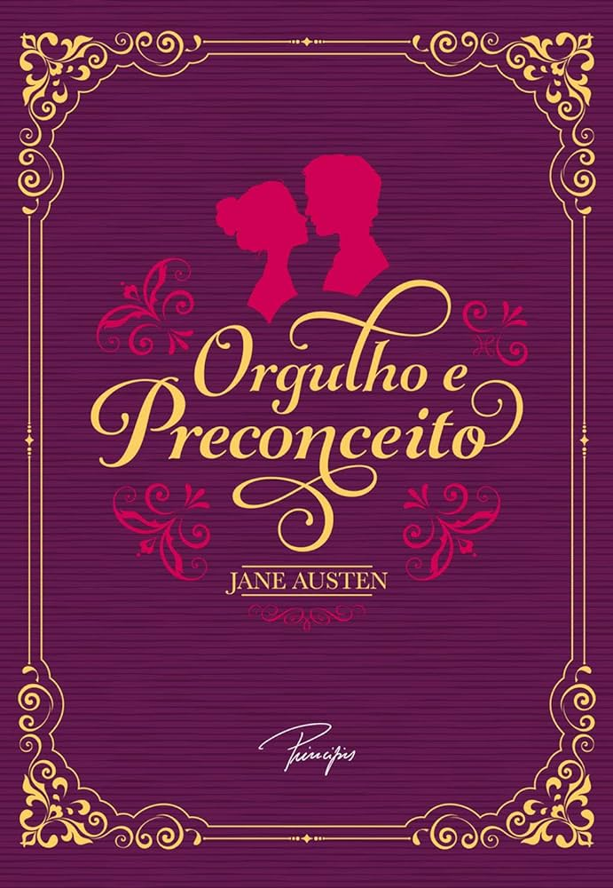

O príncipe cruel | Holly Black
Jude tinha 7 anos quando seus pais foram assassinados e foi forçada a viver no Reino das Fadas. Dez anos depois, tudo o que ela quer é ser como eles – lindos e imortais – e realmente pertencer ao Reino das Fadas, apesar de sua mortalidade. Mas muitos do povo das Fadas desprezam os humanos. Especialmente o Príncipe Cardan, o filho mais jovem, mais bonito e mais cruel do Grande Rei. Para ganhar um lugar na Alta Corte, ela deve desafiá-lo... e enfrentar as consequências. Envolvida em intrigas e traições do palácio, Jude descobre sua própria capacidade para truques e derramamento de sangue. Mas, com a ameaça de uma guerra civil e o Reino das Fadas por um fio, Jude precisará arriscar sua vida em uma perigosa aliança para salvar suas irmãs, e o próprio Reino. Com personagens únicos, reviravoltas inesperadas, e uma traição de tirar o fôlego, este livro vai deixar o leitor querendo mergulhar de cabeça na continuação deste universo. |
 |
Orgulho e Preconceito | Jane Austen
|
Para o senhor Bennet, uma vida tranquila é altamente recomendável. Para a senhora Bennet, encontrar maridos elegíveis para suas cinco filhas é o mais importante dos deveres de uma mãe. Para Elizabeth, casar-se sem afeto é impensável. Mas, para todoseles, a vida está prestes a mudar quando um jovem bonito e rico passa a residir nas proximidades. Desde seu sucesso imediato em 1813, Orgulho e preconceito continua sendo um dos romances mais populares da língua inglesa. Jane Austen chamou este trabalho de seu filho querido e sua heroína vivaz, Elizabeth Bennet, de a criatura mais encantadora que já apareceu na imprensa. A atração irresistível que ela retrata entre a brilhante e independente Elizabeth Bennet e o solenemente austero senhor Darcy está entre as maiores, mais românticas e mais engraçadas histórias de amor já contadas. O confronto romântico entre Elizabeth e o senhor Darcy é uma esplêndida atuação de luta civilizada. A sagacidade radiante de Jane Austen transborda enquanto seus personagens dançam uma delicada quadrilha de flerte e intriga, tornando este livro a mais excelente comédia de costumes da Regência da Inglaterra. |
 |